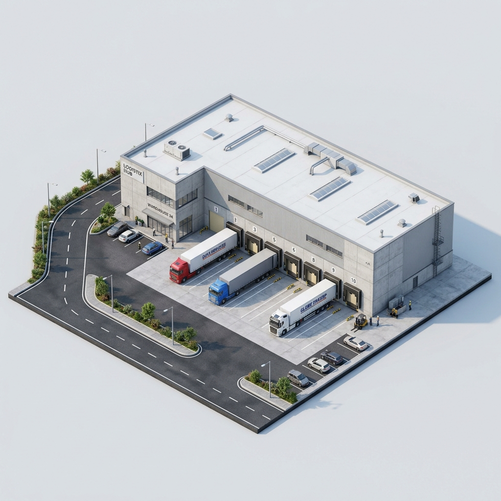
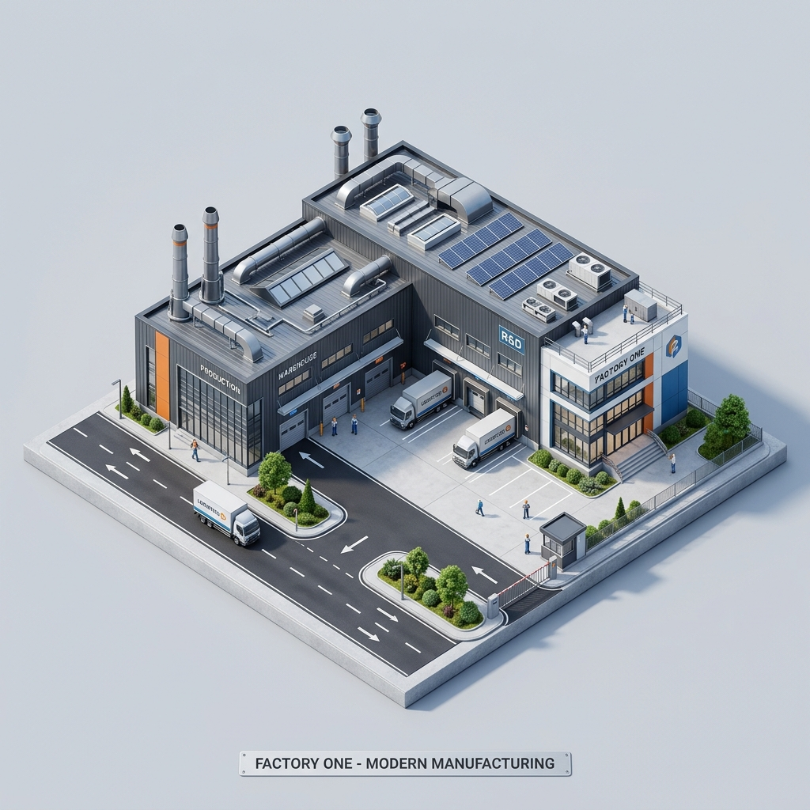
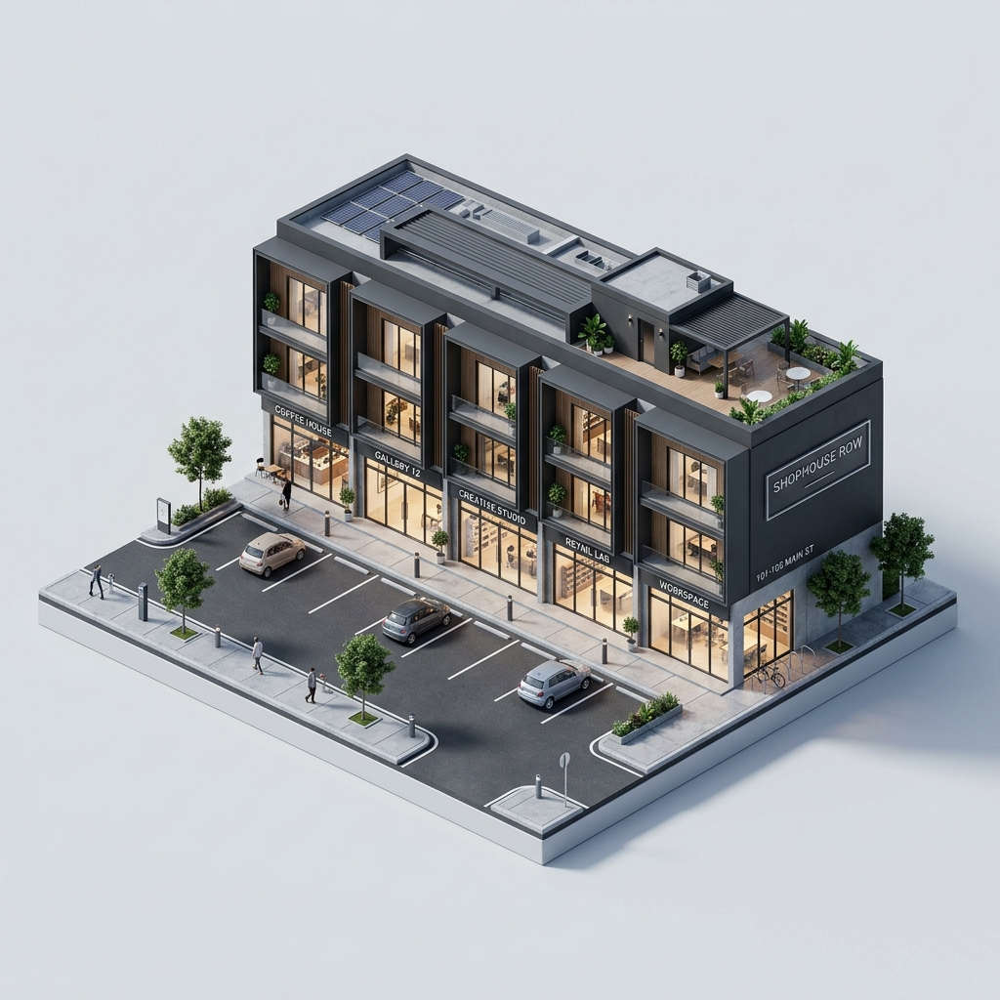
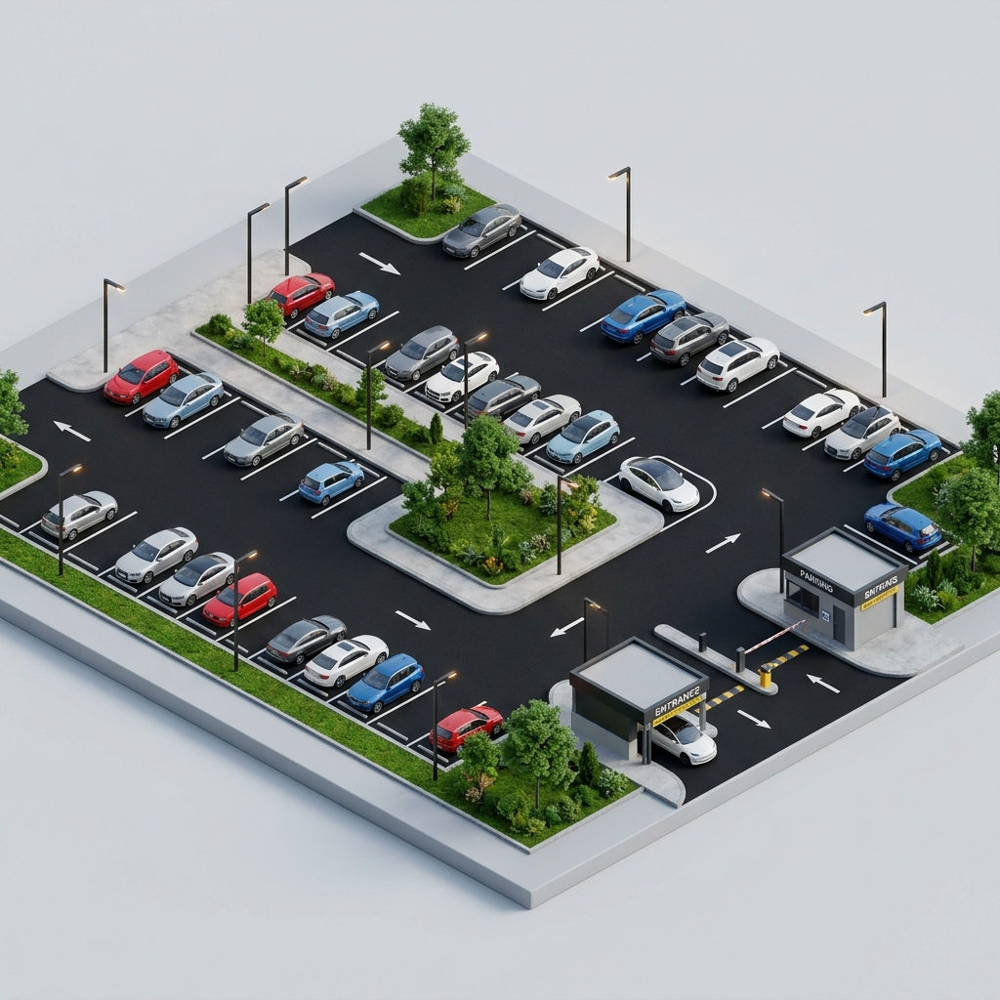
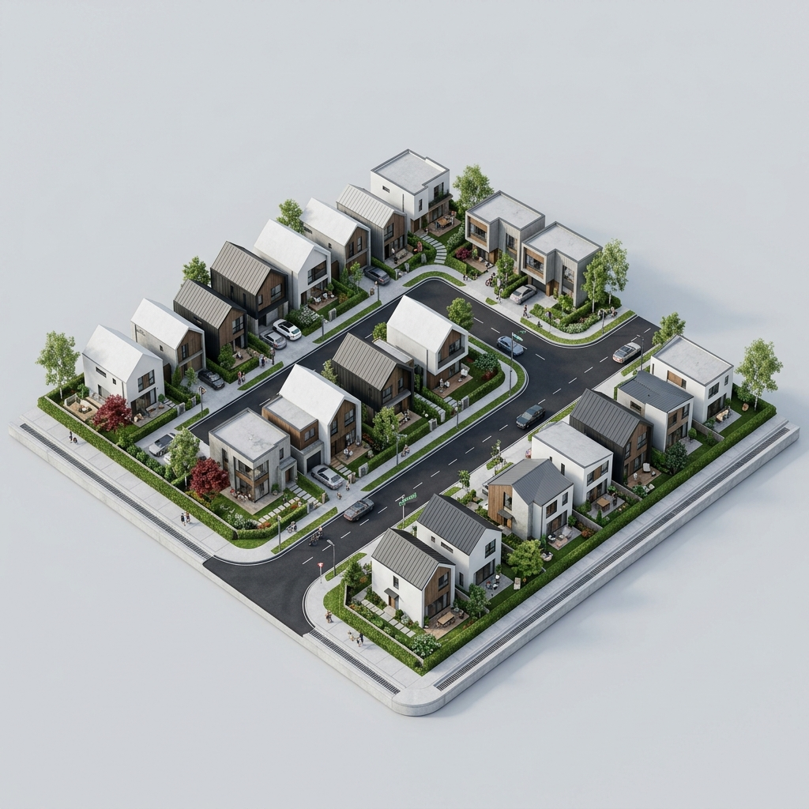

Pengaspalan
Pengaspalan
Jasa Pengaspalan Hotmix
Pengaspalan hotmix untuk jalan lingkungan, area gudang, pabrik, parkiran, perumahan dan area komersial.
- Persiapan area & Cleaning
- Tack coat & Hotmix
- Compaction & Finishing
Perkuatan dan estetika lantai industri Anda. Solusi lantai bebas debu, kuat, dan mudah dibersihkan untuk gudang dan pabrik.

Didukung ketersediaan material & alat sesuai kebutuhan proyek
Tidak semua pekerjaan membutuhkan kontraktor besar. Kami membantu menangani pekerjaan sipil dengan lingkup yang lebih fleksibel, mulai dari perbaikan area parkir, drainase, hingga finishing lantai beton.
Jalan akses berlubang, aspal mengelupas, atau area parkir tidak rata.
Sering banjir, saluran air tersumbat, atau butuh saluran pembuangan baru.
Lantai gudang yang kotor, berdebu, dan susah dibersihkan.
Didukung oleh tenaga ahli berpengalaman belasan tahun, material bersertifikat, dan manajemen mutu ketat untuk hasil kokoh, presisi, dan berdaya tahan jangka panjang.
Pengaspalan
Pengaspalan hotmix untuk jalan lingkungan, area gudang, pabrik, parkiran, perumahan dan area komersial.
 U-Ditch
U-Ditch
Supply dan pemasangan saluran drainase U-Ditch untuk area komersial, industri, perumahan dan properti.
 Poles Beton
Poles Beton
Poles lantai beton untuk mendapatkan permukaan yang lebih halus, bersih, rapi dan lebih mudah dirawat.
Layanan pekerjaan sipil kami didesain fleksibel untuk menyesuaikan skala kebutuhan beragam jenis properti.

Akses truk logistik, loading dock & lantai bebas debu

Manuver alat berat, saluran limbah air & lantai kerja

Area parkir depan toko, kansteen trotoar & drainase

Hotmix halus rata, marka slot parkir & resapan air

Jalan lingkungan cluster, u-ditch gorong-gorong rapi
Drop-off aman, halaman tertata & saluran tanpa genangan
Tidak harus menunggu proyek besar. Pekerjaan kecil–menengah tetap dapat kami evaluasi.
Material, tenaga kerja, alat, supplier dan kebutuhan project dapat dikoordinasikan melalui satu vendor.
Kirim foto, ukuran dan lokasi untuk mendapatkan estimasi awal sebelum survey.
Scope pekerjaan, material, metode kerja dan harga dijelaskan sebelum pekerjaan dimulai.
Hitung perkiraan biaya pekerjaan pengaspalan hotmix, saluran u-ditch, atau poles beton secara langsung dan transparan.
Estimasi awal acuan transparan (termasuk material & tenaga kerja)
Bukti nyata pengalaman dan ketelitian kami dalam mengerjakan proyek pengaspalan hotmix, perkerasan jalan kansteen, saluran drainase grating, dan poles lantai industri.
Tanpa proses berbelit. Kirim kebutuhan Anda via WhatsApp, kami urus estimasi hingga pengerjaan sampai tuntas.
Cukup kirim foto area proyek, perkiraan ukuran (m² atau m'), dan share lokasi melalui chat WhatsApp.
Tim kami berikan estimasi biaya awal. Jika diperlukan, kami jadwalkan survey langsung ke lokasi tanpa biaya.
Pekerjaan dijadwalkan setelah penawaran disepakati, dikerjakan rapi oleh tim spesialis, dan bergaransi resmi.
Bebas konsultasi • Tanpa komitmen • Estimasi harga cepat
Kami melayani proyek pengaspalan, pemasangan u-ditch drainase, dan poles beton untuk skala kecil, menengah, hingga industri di seluruh:
Jangan ragu untuk mengonsultasikannya dengan tim kami. Kami siap melayani pengiriman precast dan mobilisasi armada ke lokasi Anda.
Tanyakan Ketersediaan WilayahInformasi penting seputar proses pemesanan, minimal order, dan jaminan pengerjaan kami.
Untuk pengaspalan jalan, kami melayani mulai dari luas minimal 50 m² (misal halaman rumah, ruko, atau jalan komplek kecil). Untuk U-Ditch, kami melayani pemesanan supply material maupun pasang mulai dari panjang 10 meter. Untuk volume proyek yang lebih besar, kami berikan diskon harga khusus.
Tidak ada biaya alias 100% GRATIS untuk wilayah Jabodetabek, Karawang, dan sekitarnya. Tim kami akan datang melakukan pengukuran lapangan, pengecekan kontur tanah, dan memberikan rincian penawaran RAB transparan tanpa ikatan.
Untuk overlay jalan aspal atau area parkir seluas 200 - 1.000 m², pekerjaan umumnya dapat diselesaikan dalam kurun waktu 1 hingga 2 hari kerja saja berkat dukungan armada compactor roller dan tim finisher yang handal.
Metode cetak basah dengan mesin vibrator frekuensi tinggi menghilangkan rongga udara di dalam beton. Hasilnya adalah beton precast dengan kekuatan tekan tinggi (K-350), pori-pori sangat rapat, permukaan rapi, tidak mudah gompal, dan tahan terhadap rembesan air.
Floor Hardener diaplikasikan saat proses pengecoran beton masih setengah basah dengan menaburkan serbuk silika/metalik lalu di-trowel untuk mengeraskan permukaan lantai. Sedangkan poles beton diamond grinding dapat diaplikasikan pada beton lama maupun baru dengan cara mengikis bertahap menggunakan mata berlian dan cairan densifier sehingga menghasilkan kilap alami seperti marmer yang anti-debu.
Sistem pembayaran bertahap (termin) yang aman: DP saat penandatanganan SPK / sebelum mobilisasi alat, termin lanjutan sesuai progres pengerjaan di lapangan, dan pelunasan setelah serah terima pekerjaan (Berita Acara Serah Terima) selesai dengan baik.